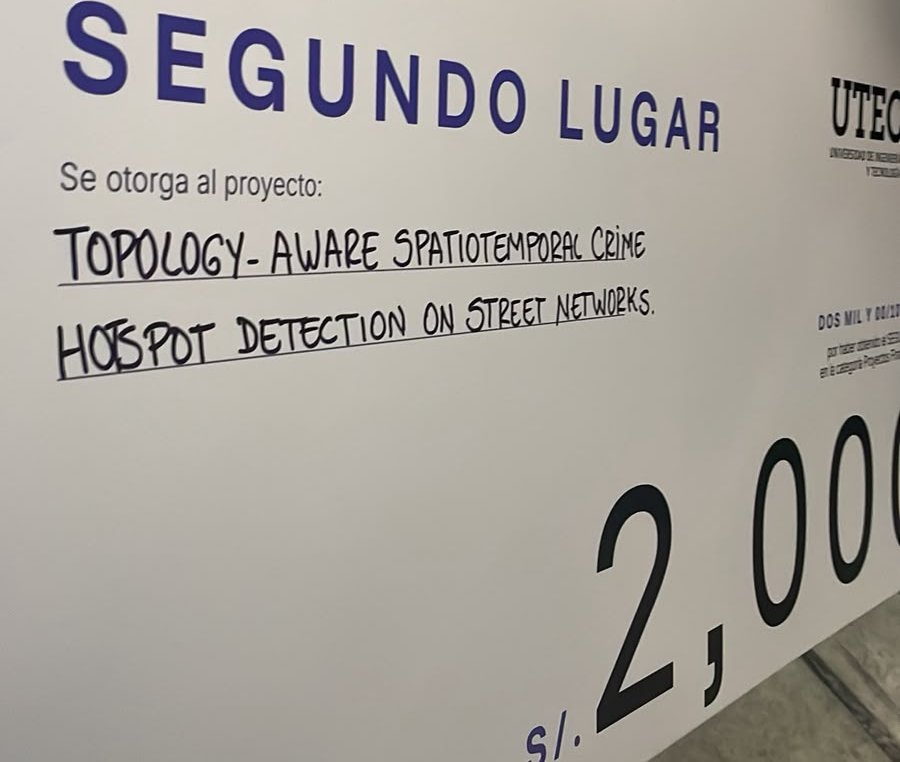
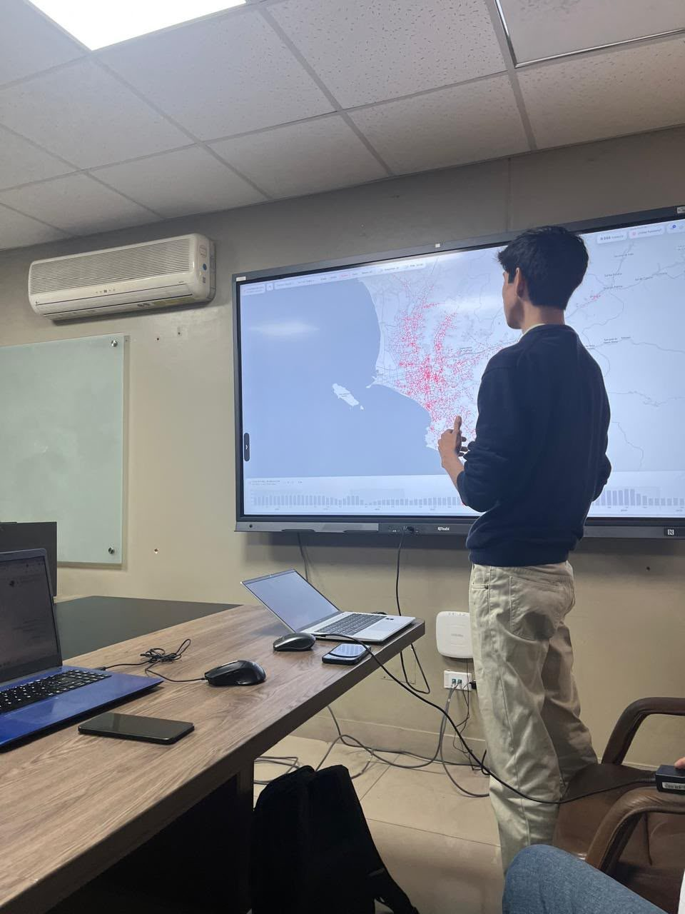

Sustentación de tesisCiencia de Datos · UTEC
TopoCrime: Topology-Aware Spatiotemporal Crime Hotspot Detection on Street Networks
↓ ↓ espacio avanzar · F pantalla completa
Contexto
Lima Metropolitana, enero 2018 – junio 2025
Problema
Nadie compara zonas con la misma estructura vial.
Pregunta
Objetivos
Evaluar cómo los puntos de interés y la topología vial se relacionan con el crimen en Lima.
Limpios y auditables
Hotspots como subgrafos, con test estadístico
Contra líneas base y verdad sintética
Forma sin crimen
Gemelos: crimen y POIs
Dashboard interactivo
OE1 · Datos
Dos tercios de las filas no dicen dónde ocurrió el hecho.
Fase 1 · Detección
Fase 1 · Detección
Fase 1 · Detección
Fase 1 · Join tree
Solo sobreviven los picos con persistencia ≥ τ.
Fase 1 · Monte Carlo
99 meses simulados al azar. Pasa si p < 0,05.
OE3 · Validación
OE3 · Validación
Fase 2 · OE4
Un test automático impide que el crimen toque la similitud.
Fase 3 · OE5
Fase 3 · OE5
Asociación, no causa.
Resultados
OE6 · Herramienta

Impacto




Conclusiones
A igual estructura vial, el crimen va con las actividades que reúnen gente y dinero.
Lo que sigue

Gracias
César Eduardo Pajuelo Reyes · Asesor: Germain García-Zanabria